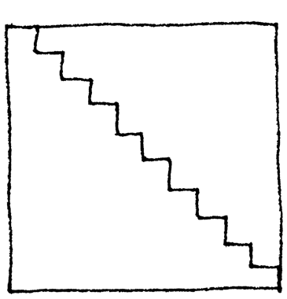
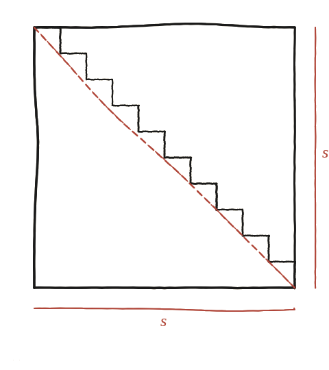

Per què no es pot fer servir el mètode d'exhaustió d'aquesta manera per mesurar la diagonal d'un quadrat?

El parany visual
Fent els graons d'una escala cada cop més petits i nombrosos, el seu contorn s'assembla cada cop més a la diagonal del quadrat, a simple vista. Sembla natural pensar que la longitud de l'escala també s'acosta a la longitud de la diagonal —però cal comprovar-ho, no donar-ho per fet.
Sumar els trams horitzontals, sols
Els trams horitzontals de tots els graons, sumats, cobreixen exactament la mateixa distància horitzontal total que el costat del quadrat —es limiten a repartir aquesta mateixa distància en trossos més petits, sigui quin sigui el nombre de graons. La suma dels trams horitzontals és sempre s (el costat del quadrat), tant si hi ha 2 graons com 2.000.

El mateix amb els verticals
Exactament el mateix raonament val per als trams verticals: sumats, fan sempre s també, per la mateixa raó (repartir la mateixa distància vertical total en trossos més petits no en canvia la suma).
La longitud de l'escala no canvia mai
La longitud total del camí en escala és, doncs, sempre s+s=2s —exactament la mateixa, sigui quin sigui el nombre de graons. Però la diagonal del quadrat fa s√2, i com que √2≈1,41 és menor que 2, es compleix sempre s√2<2s: la diagonal és, i serà sempre, més curta que qualsevol escala, per fins que se'n facin els graons. La diferència entre totes dues longituds (2s−s√2) no es redueix mai, per molt que el dibuix s'assembli visualment a la diagonal.
L'escala mai s'acosta a la diagonal en longitud, encara que hi sembli cada cop més a ull: la seva longitud és sempre exactament 2s (la suma dels trams horitzontals, s, més la dels verticals, també s), independentment de com de fins siguin els graons —mentre que la diagonal fa s√2<2s. Aquest és el motiu pel qual el mètode d'exhaustió, que sí funciona per a àrees (Qüestió 54), no es pot aplicar de la mateixa manera ingènua a longituds.
Comprovació
Amb s=10: diagonal=10√2≈14,14. Escala amb qualsevol nombre de graons: longitud sempre 20 —amb 2 graons, amb 20 graons, amb 2.000 graons. La diferència (20−14,14=5,86) es manté idèntica en tots els casos.